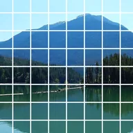

Raster

Zeichnet Rasterlinien über die deckenden Teile der Ebene oder schneidet sie daraus aus.
Einstellungen
| Einstellung | Typ | Bereich | Standard |
|---|---|---|---|
| Versatz | Punkt (X, Y) | -5000 px bis 5000 px | 0 px, 0 px |
| Anzahl | Zahl | 0.5 bis 200 | 10 |
| Streckung | Punkt (X, Y) | 0.01 bis 10 | 1, 1 |
| Breite | Zahl | 0 bis 1 | 0.1 |
| Farbe | Farbe | – | #FFFFFF |
| Ausschneiden | Ein oder aus | – | Aus |
| Winkel | Winkel | -3600° bis 3600° | 0° |